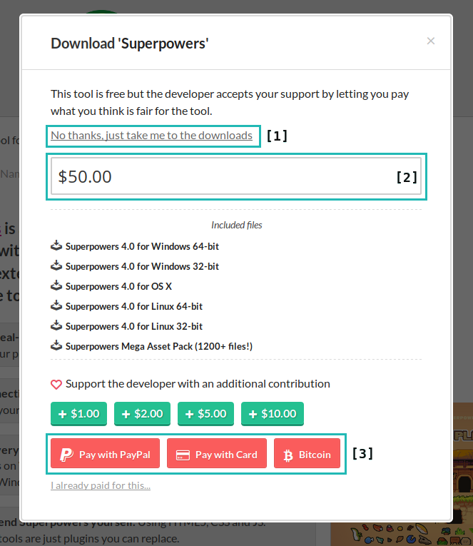
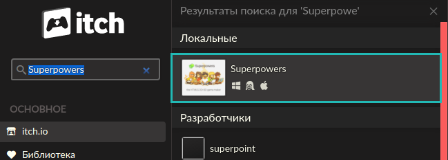
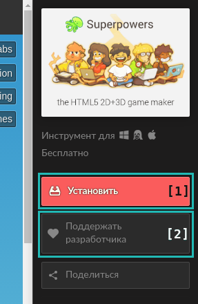
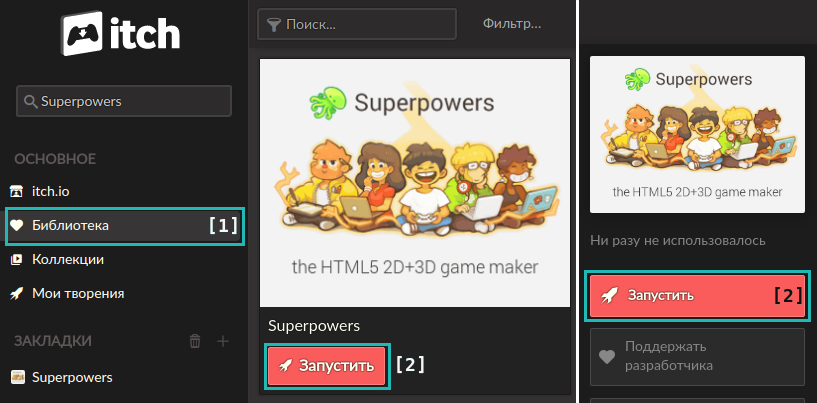
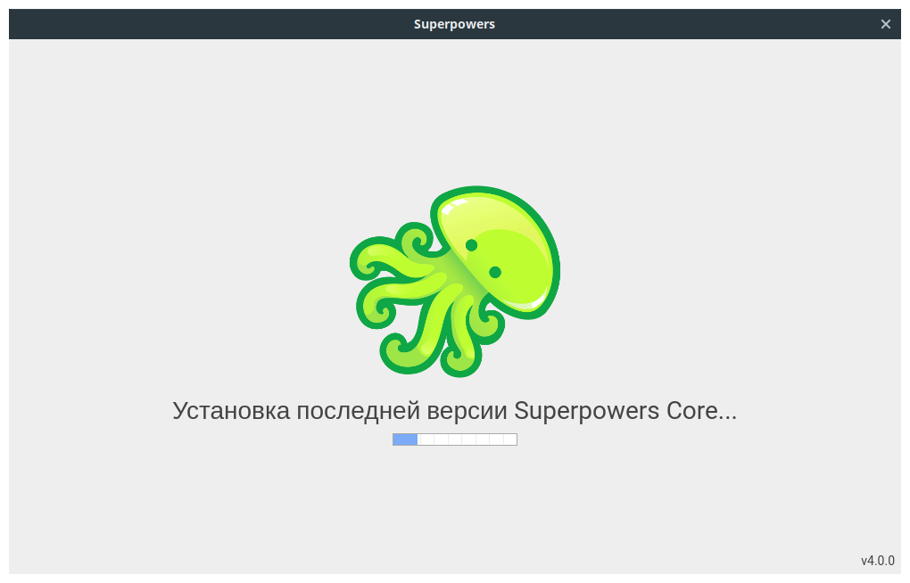
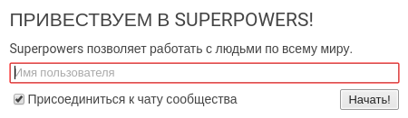
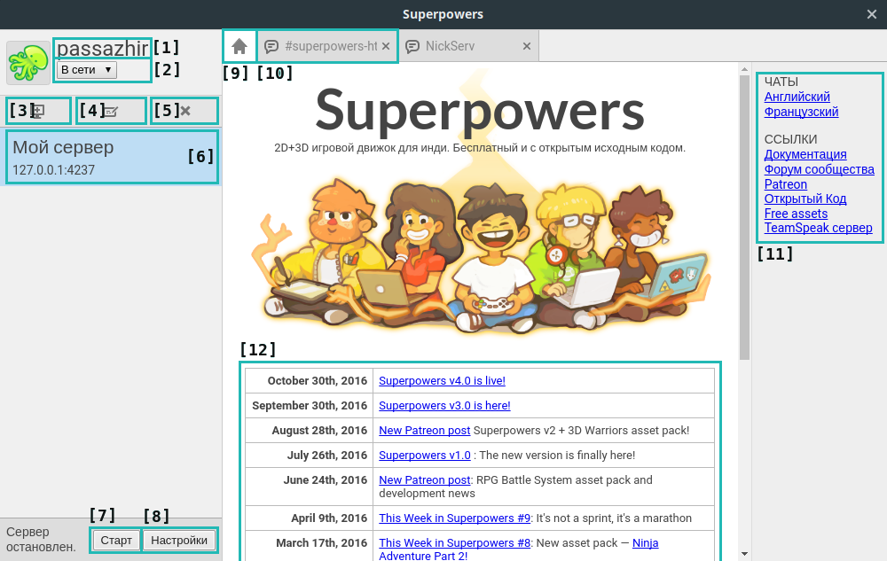
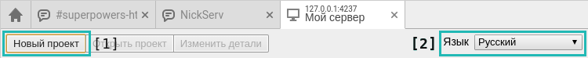

<!DOCTYPE html><html><head><title>p_Подготовка Superpowers</title><link rel="shortcut icon" href="/favicon.gif"><meta charset="utf-8"><meta name="viewport" content="width=device-width, initial-scale=1"><link rel="stylesheet" href="/css/style.css"></head></html><body class="artcl"><div class="artcl__back"></div><div class="artcl__overlay artcl__overlay--game"></div><aside class="sidebar"><div class="top-bar"><div class="top-bar__left"><a href="/sup" class="logo logo--game">p<span class="logo__slug">sup</span></a></div><div class="top-bar__right top-bar__right--pages"><a href="#" class="top-bar__link side-toggle-close">esc</a></div></div><ul class="menu menu--game menu--header"><li class="menu__item"><a href="index" class="menu__link"><span class="menu__slug">lvl01</span><h1 class="menu__name">Понг</h1></a></li></ul><p class="sidebar__desc">Знакомимся с движком, языком TypeScript и создаем свою первую игру на Superpowers!</p><ul class="menu menu--game"><li class="menu__item"><a href="ch01" class="menu__link menu--active"><span class="menu__slug">ch01</span><p class="menu__name">Подготовка Superpowers</p></a></li><li class="menu__item"><a href="ch02" class="menu__link"><span class="menu__slug">ch02</span><p class="menu__name">Структура будущей игры</p></a></li></ul></aside><div class="top-bar"><div class="top-bar__left"><a href="/sup" class="logo logo--game-artcl">p<span class="logo__slug">Sup</span></a></div><div class="top-bar__right top-bar__right--artcl"><span class="top-bar__path">sup / lvl01 / ch01</span></div></div><div class="artcl-menu"><div class="artcl-menu__top"><ul class="menu menu--game menu--artcl"><li class="menu__item"><a href="#" class="menu__link artcl-menu-toc-toggle"><span class="menu__slug">-toc</span><p class="menu__name">Содержание</p></a></li><li class="menu__item"><a href="ch02" class="menu__link"><span class="menu__slug">ch02</span><p class="menu__name">Следующий</p></a></li><li class="menu__item"><a href="https://github.com/pajamhub/dev/edit/master/public/sup/lvl01/ch01.md" class="menu__link"><span class="menu__slug">@git</span><p class="menu__name">GitHub</p></a></li></ul><p class="artcl-menu__edit">Если знаете, как сделать эту статью лучше, можете изменить её на GitHub! Ваша помощь очень важна!</p></div><div class="artcl-menu__bottom"><ul class="menu menu--game menu--artcl"><li class="menu__item artcl-menu-top"><a href="#" class="menu__link artcl-menu-top-toggle"> <span class="menu__slug">^top</span><p class="menu__name">Вверх</p></a></li></ul></div></div><main class="artcl__text artcl__text--game"><h1>1 \ Подготовка Superpowers</h1><p>Прежде чем приступить к разработке нашей первой игры, нужно подготовить движок. Разные движки устанавливаются по разному, но <strong>Superpowers</strong> в этом плане максимально прост. Сейчас сами все увидите (и не забывайте пробовать).</p>
<h2>1.1 \ Установка</h2><p><strong>Superpowers</strong> распространяется через популярный сервис <a href="https://itch.io/"><strong>itch.io</strong></a> абсолютно бесплатно и доступен для <strong>Windows</strong>, <strong>macOS</strong> и <strong>Linux</strong>.</p>
<p>Есть три способа установить этот движок на ваш компьютер:</p>
<ul>
<li>Через сайт <strong>itch.io</strong></li>
<li>Через приложение <strong>itch.io</strong></li>
<li>Собрать из исходников</li>
</ul>
<p>Мы рассмотрим только первые два варианта.</p>
<h3>1.1.1 \ Через сайт</h3><p>Заходим на страницу <a href="https://sparklinlabs.itch.io/superpowers"><strong>Superpowers</strong></a> в вашем браузере и нажимаем кнопку <strong><code>Download Now</code></strong>. После этого перед вами появится следующее окно:</p>
<p></p>
<p>Движок можно использовать совершенно бесплатно, но помните, что за его разработкой стоят реальные люди, которые тратят на него свое время и силы. Лучший способ сказать им спасибо и поддержать развитие этого инструмента - заплатить за него сколько вам не жалко. Для этого в поле <em>[2]</em> введите сумму (которую не жалко :)) и выберите удобный способ оплаты <em>[3]</em>. Затем пройдите процедуру оплаты соответствующую вашему выбору.</p>
<p>Если сейчас у вас нет возможности материально поддержать разработку, можете просто нажать на верхнюю ссылку <em>[1]</em>. В обоих случаях вы попадете на страницу выбора версии для скачивания. Найдите соответствующую вашей системе и нажмите кнопку <strong>Download</strong>.</p>
<blockquote>
<p>Тут вы можете заметить, что команда <strong>Superpowers</strong> подготовила для вас огромный пакет бесплатных и свободных ассетов <strong>Superpowers Mega Asset Pack (1200+ files!)</strong> (набор картинок для создания ваших игр), которые вы можете скачать с этой же страницы. Вот ведь молодцы!)</p>
</blockquote>
<p>Полученные файлы установите также, как и любую другую программу в вашей системе.</p>
<h3>1.1.2 \ Через приложение</h3><p>Чтобы установить движок через <strong>приложение itch.io</strong>, сперва нужно скачать и установить это приложение (доступно для <strong>Windows</strong>, <strong>macOS</strong> и <strong>Linux</strong>). Заходим на <a href="https://itch.io/app">эту страницу</a> и нажимаем <strong>Download Now</strong>, а затем устанавливаем скачанный файл. Запускаем приложение <strong>itch</strong> регистрируемся и входим. Теперь в поле <strong>Поиск</strong> вводим <code>Superpowers</code> и находим нужную страницу:</p>
<p></p>
<p>Попав на страницу движка, справа вы увидите кнопки управления приложением:</p>
<p></p>
<p>Нажав на кнопку <strong>Поддержать разработчика</strong> <em>[2]</em> вам откроется форма, в которой вы можете выбрать сумму и способ, чтобы перевести немного денег за/на разработку движка. После нажатия кнопки <strong>Установить</strong> <em>[1]</em> и, в случаи Windows или Linux, выбора 32 или 64 битной версии начнется автоматическая установка <strong>Superpowers</strong> на ваш компьютер.</p>
<h2>1.2 \ Первый запуск</h2><p>Давайте уже запустим движок и почувствуем Супер-силу!</p>
<blockquote>
<p>При первом запуске убедитесь, что компьютер <strong>имеет доступ в интернет</strong>. Superpowers будет автоматически скачивать дополнительные системы.</p>
</blockquote>
<p>Найдите ярлык установленного Superpowers в вашей системе, если скачивали его с сайта, и запустите его.</p>
<p>Если устанавливали через приложение, откройте его, нажмите на вкладку <strong>Библиотека</strong> <em>[1]</em>, выберите Superpowers и нажмите кнопку <strong>Запустить</strong> <em>[2]</em>.</p>
<p></p>
<p>При первом запуске начнется скачивание основной системы - <strong>Superpowers Core</strong>:</p>
<p></p>
<p>Это займет некоторое время, после чего появится окно приветствия с предложением ввести ваше имя пользователя:</p>
<p></p>
<p>Имя пользователя будет отображаться во встроенном официальном IRC-чате. Но вы можете и отказаться от него, сняв соответствующую галочку в этом окне. Хорошо, вводим имя и жмем <strong>Начать!</strong> Появится окно предлагающее загрузить систему <strong>Superpowers Game</strong>.</p>
<blockquote>
<p>Приложение, которое мы установили ранее, это не сам движок, а лаунчер для запуска и обновления систем:</p>
<ul>
<li><strong>superpowers-core</strong> - основная система.</li>
<li><strong>superpowers-game</strong> - движок для создания 3D и 2D HTML5 игр.</li>
<li><strong>superpowers-love2d</strong> - реализация движка LÖVE 2D в Superpowers.</li>
<li><strong>superpowers-web</strong> - движок для создания статичных веб-сайтов.</li>
</ul>
<p>Мы разберем работу только с двумя основными системами <strong>superpowers-core</strong> и <strong>superpowers-game</strong>.</p>
</blockquote>
<p></p>
<p>Ради этого мы тут и собрались, потому не задумываясь жмем <strong>Установить</strong>. Придется еще немного подождать, после чего вы увидите два информационных окна, которые рассказывают о серверах для работы с движком. Они дают возможность работать удаленно через браузер и совместно с другими людьми. Но мы рассмотрим сервера в отдельной статье, сейчас вам достаточно информации из этих двух окон.</p>
<p>Разберем интерфейс лаунчера:</p>
<p></p>
<ul>
<li><em>[1]</em> Ваше ник в чате, нажав на который, откроется окно для его редактирования.</li>
<li><em>[2]</em> Кнопка для смены вашего статуса в чате.</li>
<li><em>[3]</em> Кнопка для добавления еще одного сервера.</li>
<li><em>[4]</em> Кнопка для изменения сведений о сервере: название, ip, порт (чтобы несколько запущенных серверов не пересекались друг с другом).</li>
<li><em>[5]</em> Кнопка для удаления сервера.</li>
<li><em>[6]</em> Ваш сервер.</li>
<li><em>[7]</em> Кнопка для запуска/остановки сервера.</li>
<li><em>[8]</em> Открывает расширенные настройки сервера. Тут вы можете обновлять или устанавливать новые системы или разрешать доступ к серверу из интернета. Редактировать эти настройки можно только при остановленном сервере.</li>
<li><em>[9]</em> Приветственная вкладка.</li>
<li><em>[10]</em> Вкладка чата.</li>
<li><em>[11]</em> Полезные ссылки.</li>
<li><em>[12]</em> Новости Superpowers.</li>
</ul>
<h3>1.2.1 Открываем сервер</h3><p>Убедимся, что наш сервер запущен и дважды нажмем на него. Откроется новая вкладка, которая предложит ввести ваше имя <strong>для этого сервера</strong> (напомню, что вы можете работать с другими людьми на одном сервере). В верхней строке вкладки сервера вы можете увидеть кнопку для создания <strong>нового проекта</strong> <em>[1]</em> и для смены языка интерфейса на сервере <em>[2]</em> (по умолчанию русский):</p>
<p></p>
<blockquote>
<p><em>Ранее я осуществил перевод интерфейса Superpowers на русский и планирую в свободное время поддерживать его актуальность. Но в этом курсе мы будем придерживаться английской версии, чтобы не зависеть от обновлений перевода. Там нет сложного английского, потому перевод - вопрос эстетики.</em></p>
<p>@passazhir</p>
</blockquote>
<h3>1.2.2 Создаем проект</h3><p>Сейчас список наших проектов пуст, давайте нажмем кнопку <strong>New project</strong> <em>(Новый проект)</em>:</p>
<p></p>
<p>Введем имя (Project name) и если хотите описание (Description), а если нажать на картинку осьминога, можно поменять иконку проекта. В поле типа оставим <strong>Empty project</strong> <em>(Пустой проект)</em>, а также оставим галочку на против <strong>Open after creation</strong> <em>(Открыть после создания)</em>. Нажимаем кнопку <strong>Create</strong> <em>(Создать)</em> и перед нами откроется окно нашего нового проекта.</p>
<blockquote>
<p>Заметьте, что главная вкладка проекта - это чат для людей, которые работают над ним. Но сейчас мы тут одни :)</p>
</blockquote>
<h2>1.3 Итог</h2><p>Итак, мы установили Superpowers с нужными системами и создали первый проект. В следующей части начнем создавать нашу первую игру - <strong>Pong</strong>.</p></main><div class="footer footer--artcl"><div class="footer__license"><a rel="license" href="http://creativecommons.org/licenses/by-nc-sa/4.0/" class="footer__license-link"></a></div><div class="footer__social"><ul class="footer__social-list"><li class="footer__social-item"><a href="https://vk.com/pajam" title="vk.com" class="footer__social-link">vk</a></li><li class="footer__social-item"><a href="https://twitter.com/pajam_tw" title="twitter" class="footer__social-link">tw</a></li><li class="footer__social-item"><a href="https://pajam.tumblr.com/" title="tumblr" class="footer__social-link">tu</a></li></ul></div></div><div class="bottom-bar"><ul class="menu menu--game menu--artcl"><li class="menu__item"><a href="#" class="menu__link bottom-bar-toc-toggle"><span class="menu__slug">-toc</span><p class="menu__name">Содержание</p></a></li></ul></div><script type="text/javascript" src="../../js/sidebar.js"></script><script type="text/javascript" src="../../js/top.js"></script><script type="text/javascript" src="../../js/highlight.pack.js"></script><script>hljs.initHighlightingOnLoad();</script></body>